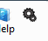
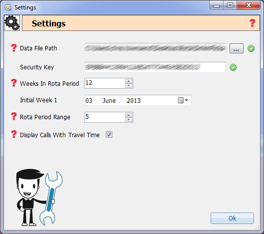

This is the settings section. This can be opened by clicking the cogs icon on the main form

This will display the settings window and allow you to modify some of the applications settings.

- Data File Path - This is the location of the data, this must be a valid cura .db file.
- Security Key - This is the current security key for Cura, it will need to be updated on a yearly basis as that is as long as the key lasts. An invalid key means Cura will not continue to run.
- Weeks in Rota Period - This defines how many tabs are shown across the top of the application representing the weeks in the rota period.
- Initial Week 1 - This is very important, even though it only needs to be set once it should be set to an instance of the first week of a rota period. This way Cura knows when your companies rota periods start and finish.
- Rota Period Range - This is to determine how many rota periods show in the drop down box on the main screen to select from.
- Display Calls With Travel Time - This determines whether calls are shown on the calendars with travel time included (making a call with travel time cover more time in the calendar)